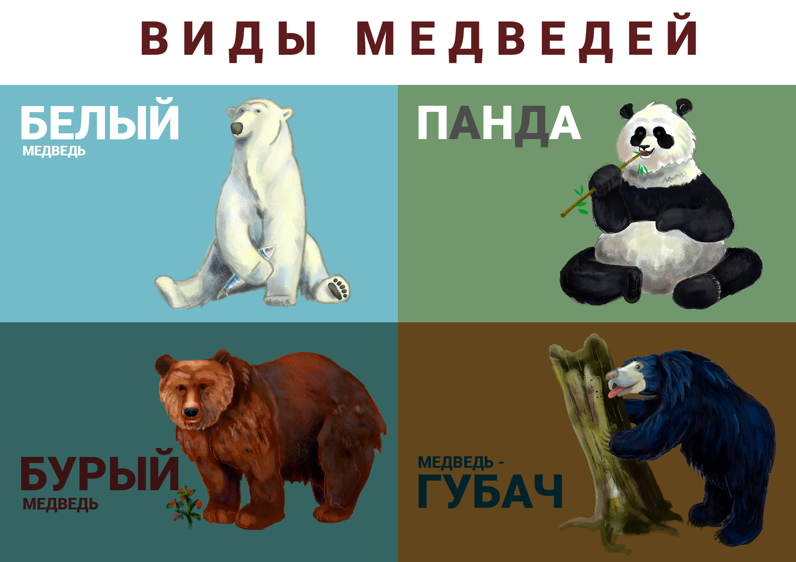

ОСНОВНЫЕ ВИДЫ МЕДВЕДЕЙ
На нашем сайте мы расскажем вам
о самый основных видах медведей


Относится к самым опасным животным на планете. Взрослое животное может вырасти до 2,6 м. Млекопитающие имеют огромные и сильные лапы, не перепончатые пальцы и уникальные подошвы, позволяющие ходить по льду без скольжения.
Относится к самому уязвимому виду семейства на планете. Панда имеет белую шубку с черными ушами, конечностями и плечами. Большие темные пятна под глазами также выделяют млекопитающих среди других. Встретить любимца человека можно в Китае, окраине Тибетского нагорья и в специальных заведениях по всей планете, в которых разводят панд.

Обитают в тундрах, лесах, береговых линиях и альпийских лугах. Животные зимой впадают в спячку и довольно агрессивны, если кто-то нарушит их сон. Убежать от хищника практически невозможно.

Название животное получило благодаря своим выраженным и подвижным губам. Медведь отличается от своих «собратьев» жесткой лохматой шубой и мордочкой белого цвета. На сегодняшний день губач занесен в Красную книгу, так как находится на грани исчезновения. Местом обитания млекопитающего является Индия.